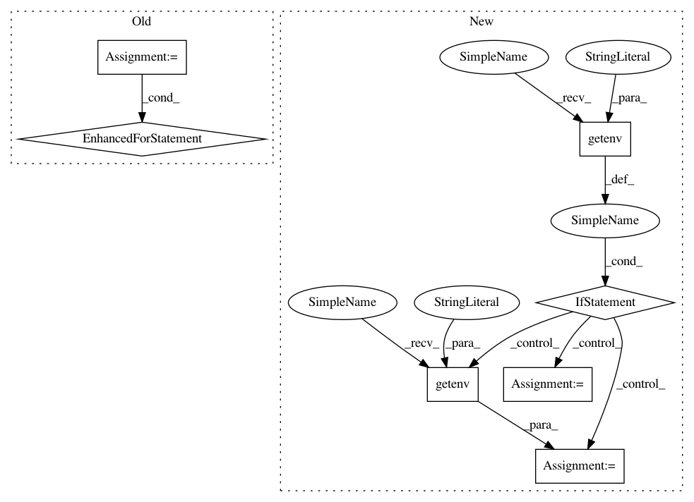

b7d23606db54f1b60d0efae50922549234b20661,theano/configdefaults.py,,,#,1803
Before Change
// Check if there are remaining flags provided by the user through THEANO_FLAGS.
for key in THEANO_FLAGS_DICT.keys():
warnings.warn("Theano does not recognise this flag: {0}".format(key))
After Change
// On Windows we should avoid writing temporary files to a directory that is
// part of the roaming part of the user profile. Instead we use the local part
// of the user profile, when available.
if sys.platform == "win32" and os.getenv("LOCALAPPDATA") is not None:
default_base_compiledir = os.path.join(os.getenv("LOCALAPPDATA"), "Theano")
else:
default_base_compiledir = os.path.join(get_home_dir(), ".theano")
AddConfigVar(
"base_compiledir",
"platform-independent root directory for compiled modules",
ConfigParam(
In pattern: SUPERPATTERN
Frequency: 3
Non-data size: 7
Instances
Project Name: Theano/Theano
Commit Name: b7d23606db54f1b60d0efae50922549234b20661
Time: 2017-07-31
Author: abergeron@gmail.com
File Name: theano/configdefaults.py
Class Name:
Method Name:
Project Name: kubeflow/kubeflow
Commit Name: 7f64d8b023147927b74139bbdbbffa1ffca536bc
Time: 2019-10-30
Author: jeremy+github@lewi.us
File Name: py/kubeflow/kubeflow/ci/kfctl_go_test_utils.py
Class Name:
Method Name: get_config_spec
Project Name: Theano/Theano
Commit Name: f8a7c0edb2c4123d032fa32073c7356a7a17d9f0
Time: 2017-08-07
Author: stevenbocco@gmail.com
File Name: theano/configdefaults.py
Class Name:
Method Name: